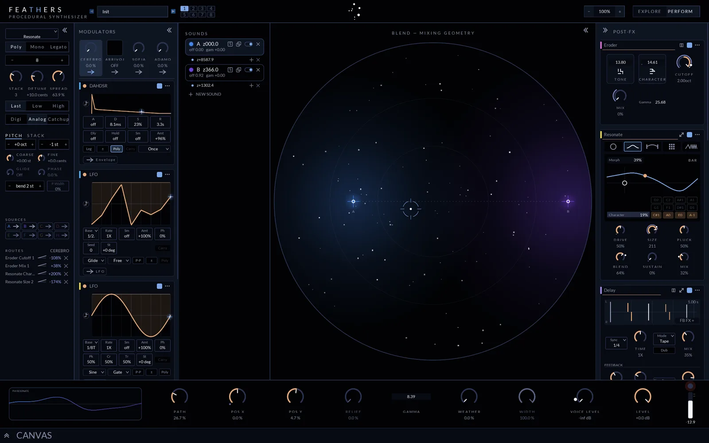
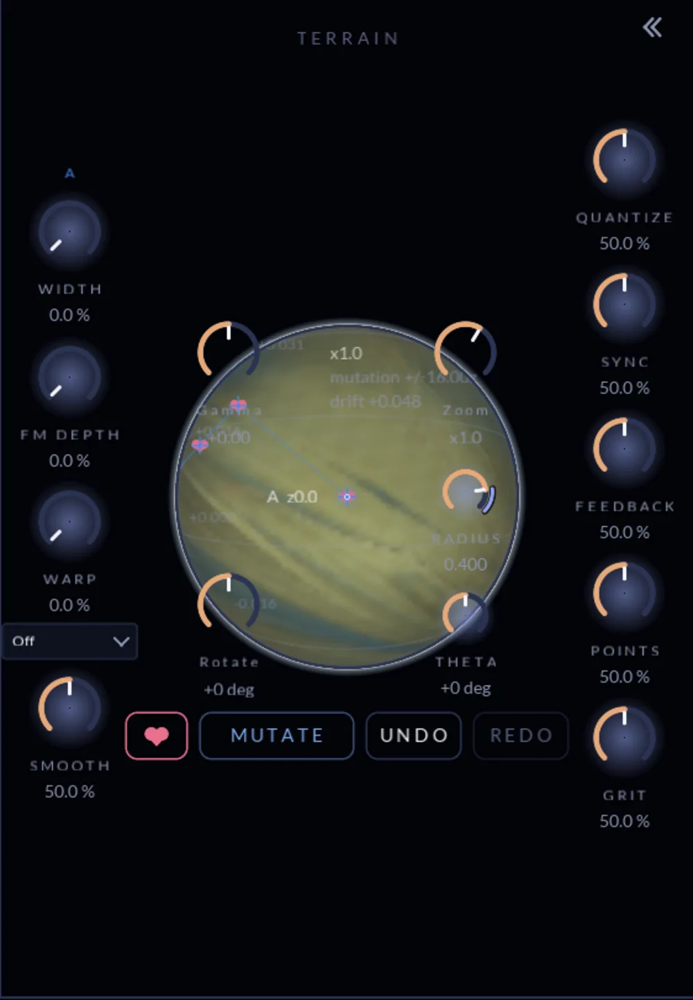
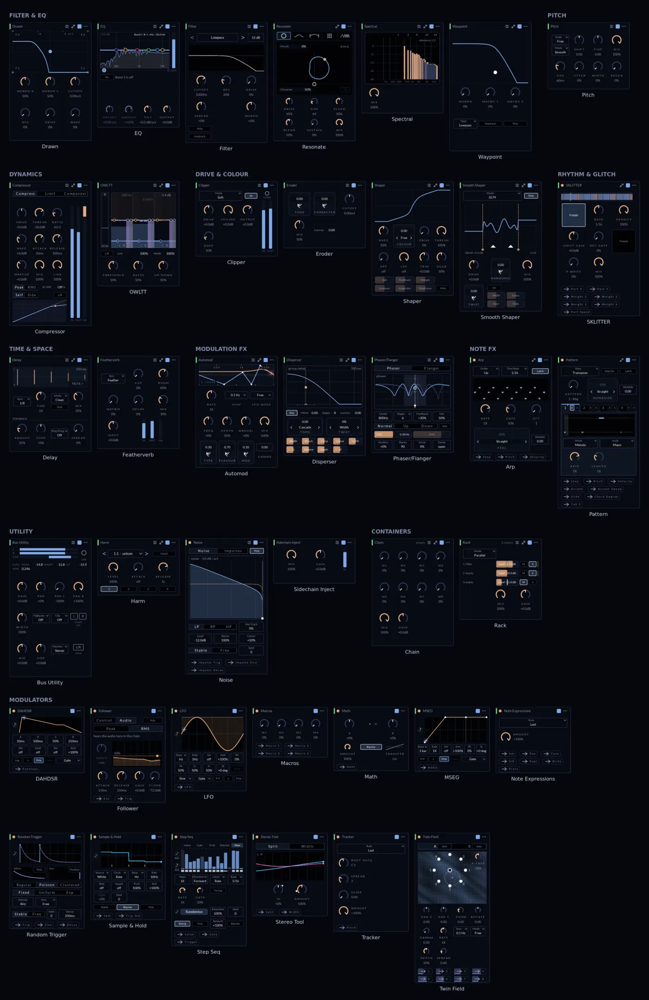

Feathers
A polyphonic synthesizer and effects rack for CLAP and VST3. Its oscillators read their character from a terrain you move through, not a list of waveforms.

Install
Paste one line. It downloads the latest release, checks it, and installs the synth and the Chain (CLAP and VST3) into your own plugin folders: no clone, no GitHub account, no administrator password, and on macOS nothing to unquarantine.
macOS and Linux (Terminal)
curl -fsSL https://feathers.owletrecords.com/install.sh | bashWindows (PowerShell)
irm https://feathers.owletrecords.com/install.ps1 | iexThen restart your DAW or rescan its plugins. Prefer to download by hand? Take the zip for your platform from the latest release; SHA256SUMS.txt beside it lets you check the download. The scripts are short and readable: install.sh, install.ps1. Per-platform notes and options are in the README.
Pre-1.0. Patches and presets are not stable before 1.0. Devices and engines are still changing, and a later build may load a saved patch, preset or DAW project differently, or not restore parts of it. Don't rely on Feathers for projects you need to reopen exactly as they were, and keep a bounce of anything that matters.
What it is
Around the oscillators sit a modulation system where modulators are devices like any other, and an effects lane of devices that can hold lanes, chains and racks of their own.
Engines and terrain
Each sound is a position on a terrain. The Explore surface shows the terrain under the puck, and lets you mutate it, like a result, and undo or redo. Engines include V5, Additive, Pluck, Drum, Resonate and Basic Shapes, plus the original Morph and Stair.


Modulation as a first-class system
Modulators live in a lane of their own and are added, reordered and removed like effects: DAHDSR, LFO, MSEG, Math, Twin Field, Pattern, Step Seq, Sample & Hold, Random Trigger, Follower, Macros and Note Expressions. Every output is a source you can route to any modulatable parameter, on the engine or on a device.
- Routes have transfer curves: linear, exponential, logarithmic, φ, and rectifiers for bipolar sources.
- Live readouts: a modulated control shows its ring and its as-modulated value, and when a source is armed every destination it can reach glows.
- Deterministic and persistent: values that can be derived from the seed and the song position are derived, so a reload reproduces them; the rest (held samples, frozen buffers, random draws, mutate results) are saved with the patch.

Effects depth
Effects are devices in a lane. Each has a compact card and a larger window that offers every control on the card and usually more. Several devices hold lanes of their own: the Delay's feedback path, the Compressor's lane between its two halves, Resonate's drone and wet lanes, SKLITTER's grain and post lanes.


Rack modes
Chain and Rack devices nest whole chains, in series or in parallel, to any depth. A Rack's mode decides what each of its chains hears and how they come back together:
- Parallel
- Every chain hears the input, and their outputs sum.
- Select and Blend
- A Position control picks one chain, or crossfades between neighbours. Modulate it and the rack becomes a morphing switcher.
- Mid/Side and Left/Right
- One chain per half of the signal, so you can widen, saturate or delay only the sides.
- Bands
- A multiband splitter into 2, 3 or 5 bands with adjustable crossovers and slope (Linkwitz-Riley), one chain per band. Filtering can sit before the chain, after it (so the harmonics a chain creates stay inside its band), or both. With Key Track, the played note places the crossovers.
An open standard for devices
A device declares its controls, outputs and traits (names, ranges, units and choices) with nothing naming CLAP or Feathers, then supplies tables for what it does: audio, modulation, notes. It can draw its own card and window or take the generic card for free. Every device in Feathers is built on this contract, and two hosts already run it: Feathers itself and the separate Feathers Chain plugin. The device SDK in the repository is MIT-licensed, so devices built on it can be open or closed source, while Feathers itself stays GPL-3.0-or-later. Its shape is still open, and plugin authors who would build on it are the people best placed to shape it.
Hosting
Built today: Feathers' core parameters are host parameters, and controls inside devices reach the DAW through a pool of pre-declared host parameters ("slots"), in both CLAP and VST3. Right-click a control and choose "Expose to host": turning the knob records automation, and DAW automation and modulation move the knob. Slots map devices at any depth and are saved with the project.
Planned, not built: hosting third-party CLAP plugins inside Feathers' chains and racks, and native devices from third parties with their own cards, windows and the full modulation system.
Platforms
Linux x86-64
First-class. Feathers is developed and played on Linux every day, in Bitwig, and every pre-release build ships for it.
macOS universal
Apple silicon and Intel in one build. Signed ad hoc, not notarised. The one-line installer downloads with curl, which macOS does not quarantine, so there is nothing to clear; a browser download needs the README's unquarantine step.
Windows x86-64
The editor is new: it passes tests on CI's Windows desktop, but nobody on the team has played it on a Windows machine yet. Please report anything odd.
Each build contains the synth and the Chain as CLAP and VST3; the Linux and Windows builds also include the synth's standalone.
Open source
The core of Feathers is, and will remain, open source under the GNU General Public License, version 3 or later. The open device standard means anyone can build devices on top of that core. Feathers is in active development, and we would like to hear from collaborators (DSP, UI or platform people who want to work on a deep, test-heavy C++ codebase) and from sound designers, producers and performers willing to use pre-release builds and give feedback.